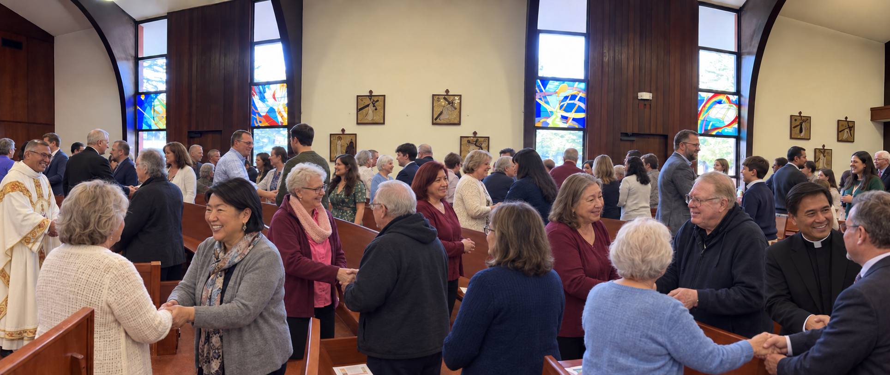

A Catholic parish in Emerald Hills
Come worship where people know your name.
St. Matthias is a close-knit Roman Catholic parish in Redwood City. Come as you are.

A Catholic parish in Emerald Hills
St. Matthias is a close-knit Roman Catholic parish in Redwood City. Come as you are.
A life shared in Christ
At St. Matthias, faith becomes friendship, formation, prayer, and service—one person at a time.
You are welcome here
Come pray with a Catholic community where newcomers are noticed, families are welcomed, and there is room to grow. Sit anywhere you like—we will be glad you are here.
Find your place
Parents and children grow together through our family faith formation program.
A place for middle- and high-school students to belong, serve, and deepen their faith.
Voices and instruments help the whole assembly pray. New musicians are always welcome.
Share food, practical care, and friendship with neighbors who need a hand.
Help every person who comes through the door feel seen, known, and at home.
Gather in the church to pray the Rosary together for peace in our world.
Hospitality after both Masses, with Mexican food and a piñata Saturday and coffee, doughnuts, and fellowship Sunday.
Meet the ministry team and learn about its faith and community work during Doughnut Sunday.
Amazing cars, great food, music, raffles, and family fun. Admission is free and all are welcome.
St. Vincent de Paul presents an evening in Fr. Lacey Hall on faith, dignity, and service.